MCBE 1.21.10.24哨塔子结构及hsa介绍
首先来讲一下发现的过程吧，首先是我们之前在1.21.10.22测试方块性质的時候，发现有悖之前结论的现象，在确定不是方块性质出了问题之后，发现好像是这结构hsa出了问题，在群里和橘猫等人交流之后，甚至发现还不止于此，疑似是麻将想改hsa，结果不知道动了什么屎山，导致hsa的保存出了问题，也就是说这个hsa点位直接消失了，并且在测试的过程中，橘猫等人还发现哨塔的部分子结构也可以生成掠夺者了，但是之前两个测试版因为hsa存在消失的问题，所以也没有去很多的关注，问题不大
但是在今天，新的测试版当中，把这个hsa消失的问题修复了，但是根据橘猫所说，麻将好像并不是直接回溯的代码，似乎是打补丁的样子，所以这就导致那个哨塔的部分子结构也具有hsa这个特性被保留下来了，然后我们来讲一下我们的测试结果，因为并不是所有的子结构都有hsa，而且这个hsa也和哨塔主体的不太一样，问题不大
1.子结构hsa分布
哨塔的子结构一共有6种，分别是铁傀儡的笼子（开顶带地板），小安利的笼子（封顶无地板），两种羊毛棚子（内部有无南瓜），稻草人，原木堆，然后我们先来看一下这六种当中具有hsa的子结构，问题不大
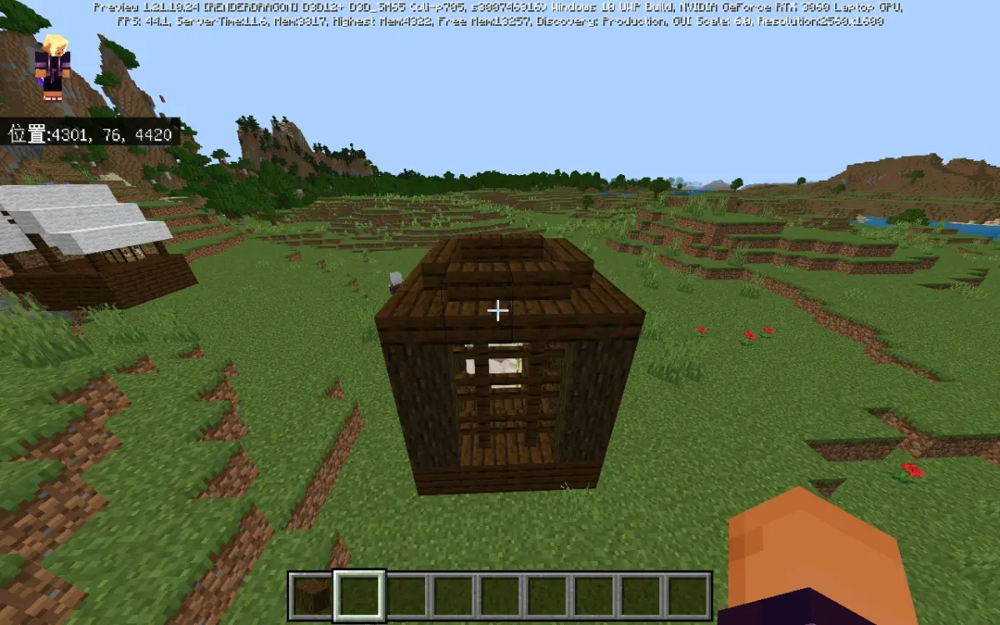
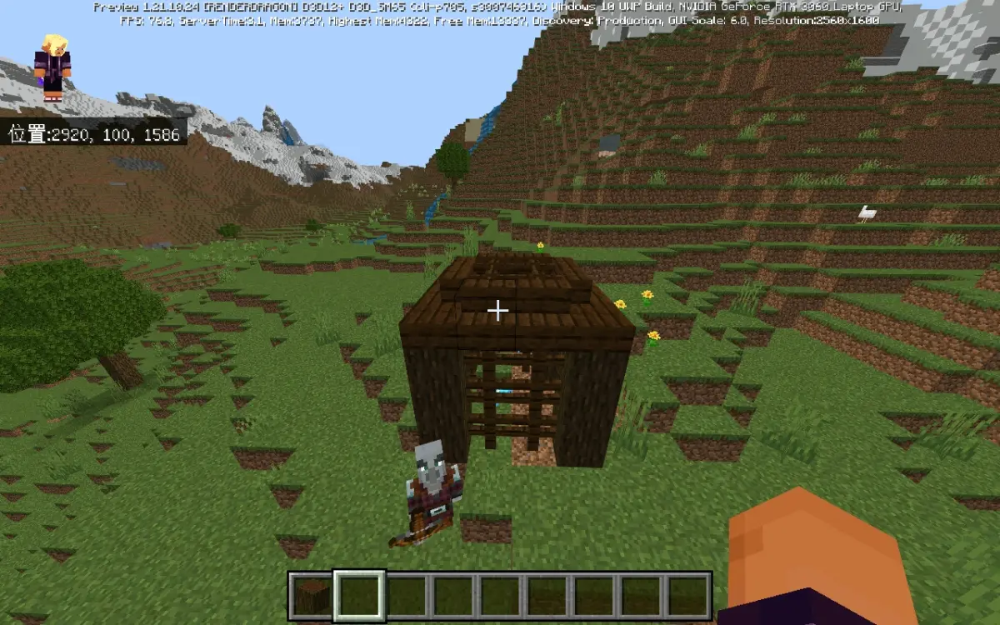
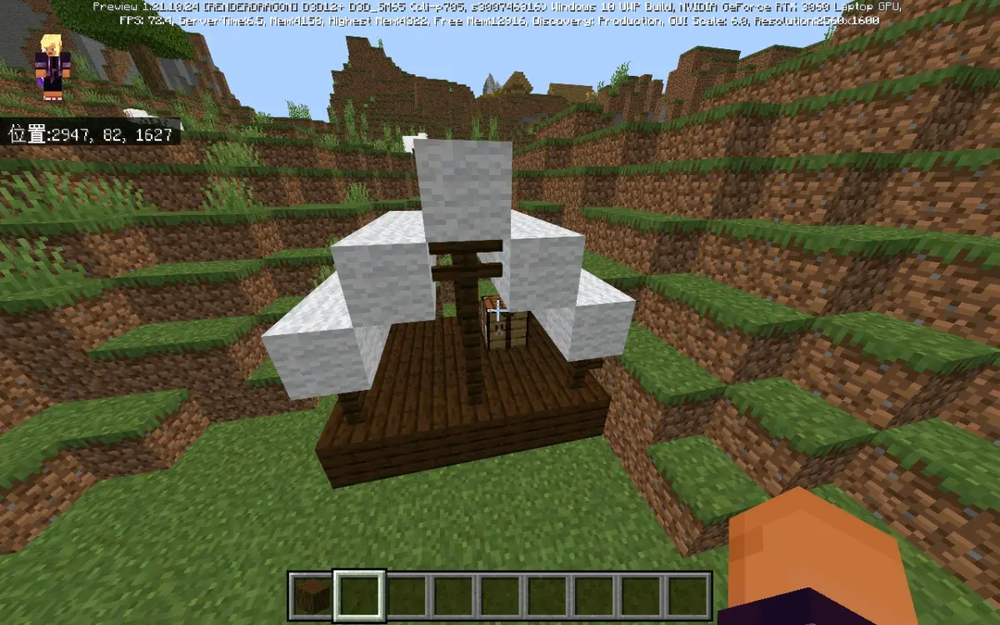
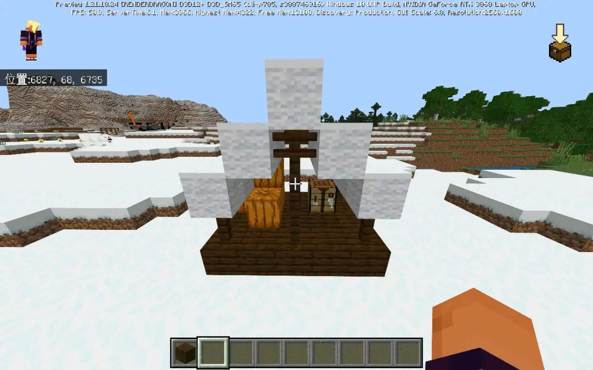
以上展示的4种结构是具有hsa的子结构，其实就是两种羊毛棚子以及两种笼子，注意铁傀儡的那种笼子是顶上开口并且底下有地板的那种，小安利的笼子是那种顶上封口并且底下没有地板的，里面是否有生物不影响hsa，具体关于hsa的东西下一节会讲，问题不大
然后再来看一下剩下的几种不具有hsa的子结构
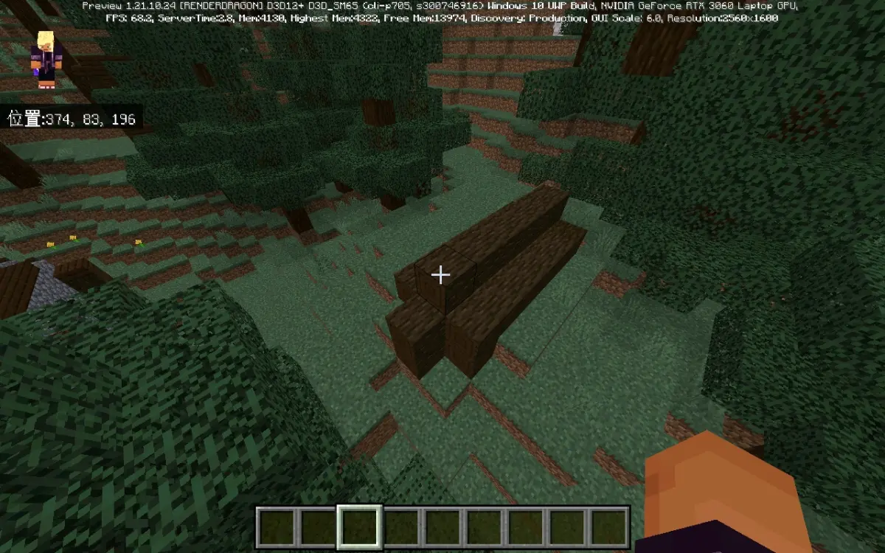
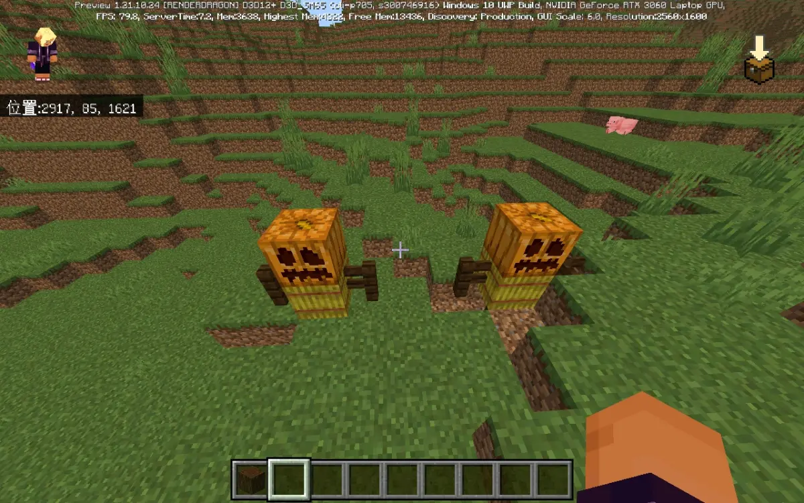
这几种结构里面那个原木堆和稻草人没有hsa我们倒是不意外，我们和橘猫在想，是不是因为hsa过小，所以直接被压掉了，毕竟前面那几个hsa也挺小，不过问题不大，这都是下一节的事了，进入下一节，问题不大
2.子结构hsa情况
首先就是这个子结构和哨塔主体不一样，哨塔主体是固定的位置，基本上就那三种情况，跨区块也只可能是旗帜跨区块，但是这些子结构的分布就相对随机了，而且经过我们和橘猫等人的测试，这些子结构也确实是可以被区块分割的，而且分割之后也确实会形成更多的hsa点位，而且我们测试还发现了一个有趣的东西，就是这个子结构的判定范围比我们想象的要大一点，来举一个例子吧，问题不大
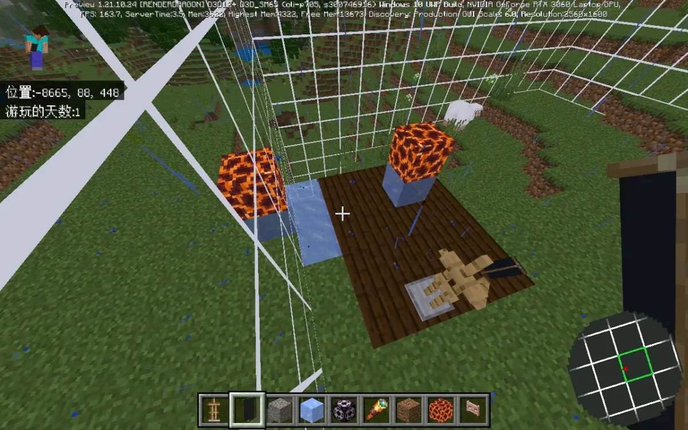
可以看到这个羊毛棚子，它主体结构离这个区块边界还有一点距离，也就是按照我们正常的思维去看的话，这个棚子还是在一个区块内的，但是实际上，经过测试发现，不管是羊毛棚子还是两种笼子，他们的实际判定范围都比自身大小（地板大小）大两圈，也就是说，实际上，这个羊毛棚子的判定范围是这样的
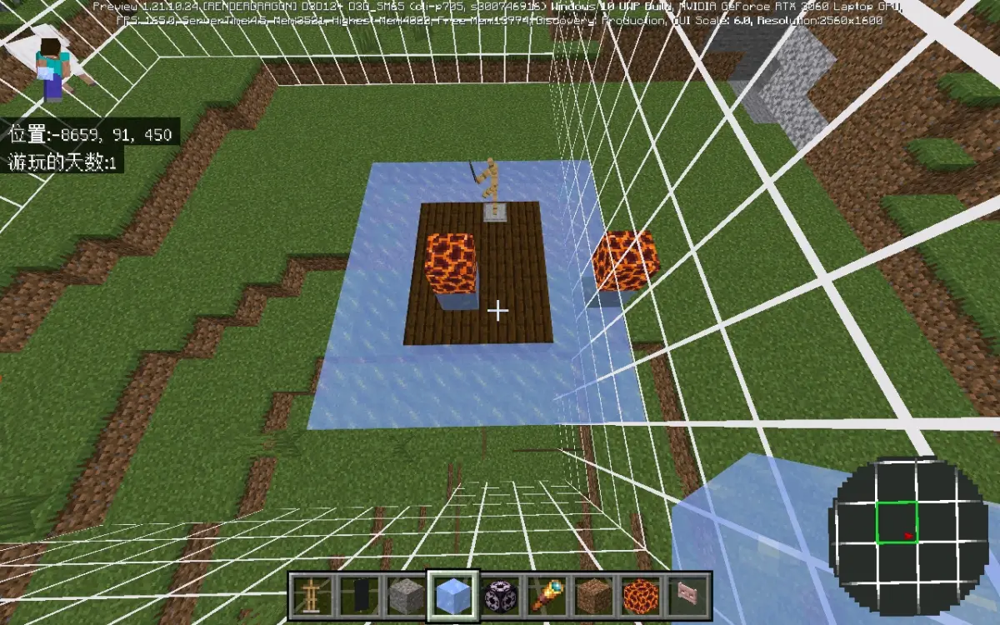
也就是比自身的地板大两圈，然后这样子就可以看到实际上这个棚子的范围判定已经跨了两个区块了，这也就是为什么旁边那里还被我们标了个点的原因，那你实际也是有个点，这个我们早测试过了，不用怀疑，而且实际上也可以被四个区块分割的，刚好我们这个哨塔比较运气好，两个棚子，一个被两区块分割，一个被四区块分割，问题不大
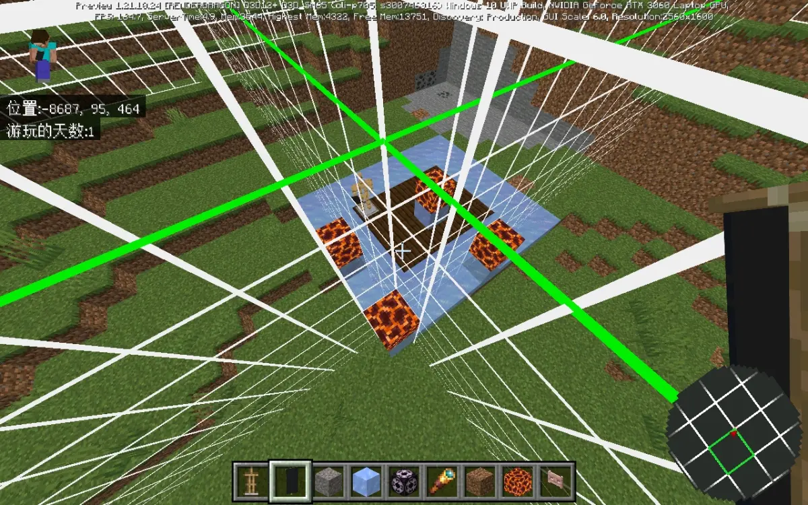
后面我们又去测试了，那个两种笼子，判定范围也没有问题同样是比自身地板大两圈，不过羊毛棚子的地板是5×4，两种笼子的是4×4而已，直接放一个刚好跨4区快的铁傀儡笼子的图吧，问题不大
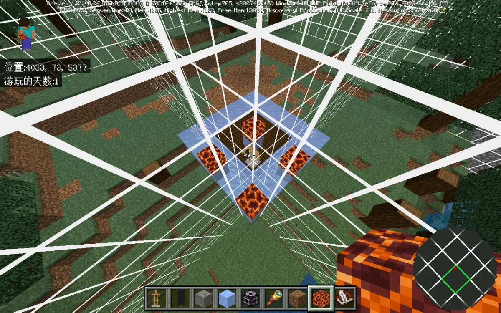
而且不知道是不是巧合，我们找到的这两个有四区块分割的子结构的哨塔，刚好他们的主体也是被四区块分割，问题不大
3.子结构hsa范围
另外就是之前提到的这个体结构的hsa的范围和主体不太一样，我们都知道主体那个hsa范围是一个很长的柱子，而且同样作为子结构的堡垒子结构一般范围也很长，但是这个哨塔的这几个结构hsa范围确实非常的短，具体有多短呢？看一下这个图就知道了，问题不大
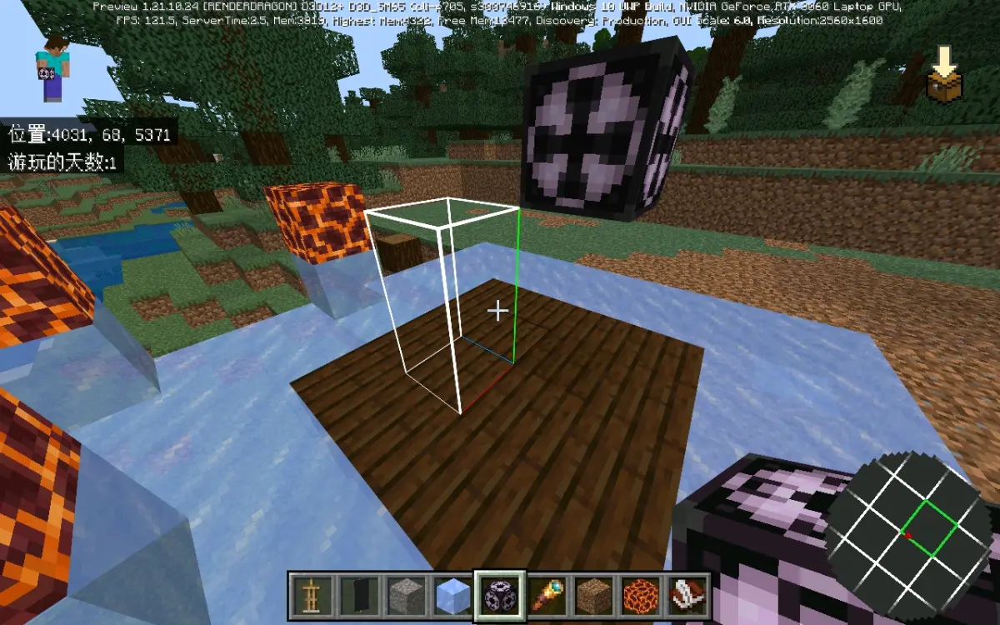
是的，没错，你没看错，两种羊毛棚子和铁傀儡笼子的hsa就两格高，真的就只有两个高，这是我们经过严谨的测试得到的结论，我们和橘猫讨论之后，觉得另外几个子结构没有hsa可能是因为高度太低直接被压掉了，问题不大
而且另外就是不同的子结构hsa的起始点还不一样，两种羊毛棚子和铁傀儡笼子这三种带地板的就是直接从地板起始也就是上图展示的，但是小安利笼子这种没有带地板的，就不是从地板开始了，这也就导致我们一开始测试的時候误以为小安利笼子不能刷，让我们来看一下
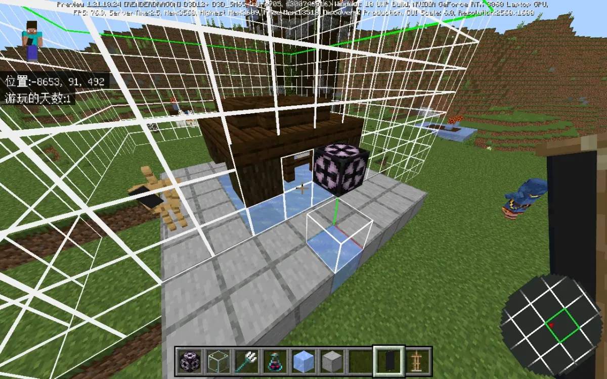
没错，这种没有地板的小安利笼子，它的hsa不是贴着底部，而是靠在中间，就是固定是从上往下第三格，而且只有一格的高度，就很难崩，这也是我们为什么会觉得那个稻草人和原木堆真的是因为hsa高度太低被直接压掉了的原因，问题不大
然后这个范围的话，你看一下我们之前发的那个结构生成的空气检测范围的专栏，大概就能知道，问题不大
 站内专栏 »
站内专栏 »
也就是说，两格高的生成点就只有两种可能，要不就是直接地板，要不就是地板往上一格，再往下就不在hsa范围，再往上就空气检测直接不通过，就这两种，至于后面那个一格高的，那就只有一种可能了，可能稍微有点难崩，但是问题不大，毕竟主塔的hsa范围还是挺长的，可以很容易的拉低下来，而且这几个子结构也基本都在一个平面，就算是模拟四想要一起加载到也并不是很难，所以的话也不是不能用，问题不大
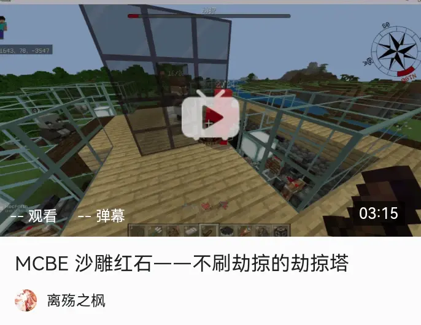
B 站视频 »那这么一来的话，我们之前弄的这个东西也并不是完全没有性价比了，毕竟选个好点的哨塔的话，能有个十多个点，最理想的情况是，四个子结构和主体都是4点也就是一共20，不过我们目前来说，最高也就只找到过十多个点，但是怎么说呢，至少比之前有用点了，问题不大
不过需要注意一点，就是那个在末地和地狱的劫掠加入，和之前那个直接60开外的秒杀机制一样，都是需要过一个游戏日才可以正常运行，这个根据喝茶壶等人的合理推测，就是麻将直接copy了铁傀儡的部分代码，因为铁傀儡需要过一个游戏日之后才能刷新，所以就导致了这种莫名其妙的现象，问题不大
那就这样吧，其他也没什么好说的了，就是单纯的最新测试版那个有一部分的哨塔子结构也具有hsa的情况以及这个hsa和哨塔主体的区别说明一下，到此结束，问题不大
鸣谢：橘猫，joker，茶壶等
测试版本：1.21.10.22-24